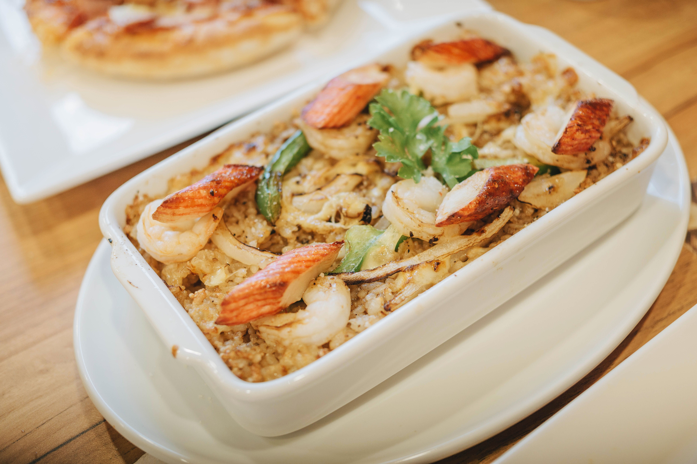

Receta de Arroz Frito

Descripcion
Esta receta esta pensada para compratir en familia y explorar nuevos
sabores.
es una receta que es muuy buen para el mundo del fitness por sus
propiedades.
Pasos:
- Arroz blanco cocido(preferiblemnte del dia anterior)
- Huevos
- Vegetales(como cebolla,guisantes y cebolleta)
- Y una mezcla de salsas(principalmente salsa de soja y aceite de sésamo).